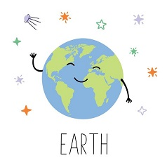
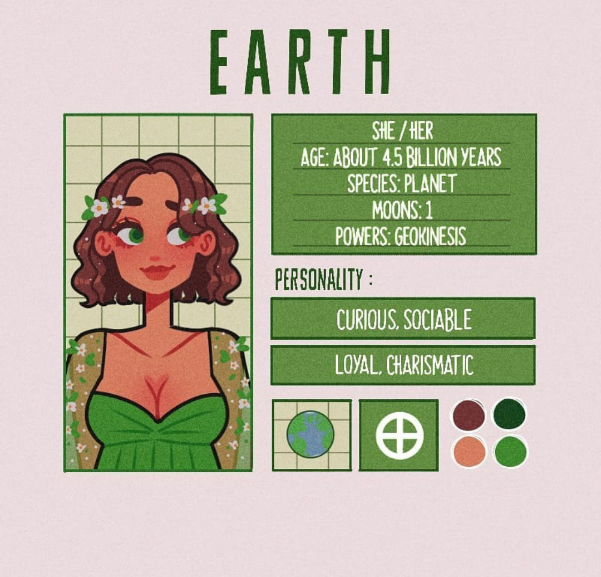

Приветик! Узнал меня?
Я Земля, единственная обитаемая планета нашей Солнечной системы, занимаю третье место от Солнца и являюсь крупнейшей планетой земной группы. Хотя я и уступаю в размерах всем планетам внешней области Солнечной системы, я тем не менее имею самую высокую плотность. Благодаря атмосфере и океанам я из космоса выгляжу голубой планетой.
Я состою из нескольких слоев. Снаружи находится земная кора толщиной от 6 до 70 км, состоящая из гранитных, базальтовых и осадочных пород. Под корой глубиной почти дл 3000 км располагается мантия. Под ней скрывается железо-никелевое ядро - твердое внутри, но с жидкой внешней оболочкой.
Более 70% моей поверхности покрыто водой. Она регулирует климат, она же способствовала появлению жизни.
Смена времён года происходит благодаря тому, что ось вращения наклонена к моей орбите. Вращаясь вокруг Солнца, я подставляю ему то одно полушарие, то другое. При этом на экватор в любое время года солнечного света попадает больше, чем на полюсы.
Из-за взаимодействия с Луной земные сутки каждый день увеличиваются, но эта прибавка так мала, что составляет всего сотую долю секунды за 100 лет.
Из-за того, что моя ось наклонена по отношению к орбите, в областях вокруг Северного и Южного полюсов возникают полярные ночи и полярные дни, когда Солнце не появляется над горизонтом или не опускается за горизонт в период дольше суток.
Земля
- Пол: Женский
- Возраст: 4.5 биллионов лет
- Спутник: Луна
- Способности: Геокинез(манипуляция землёй)
- Качества: Харизматичная, лояльная, любопытная, общительная
- Любимые цвета: Тёплые оттенки
